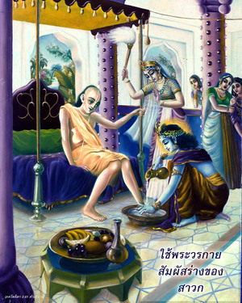
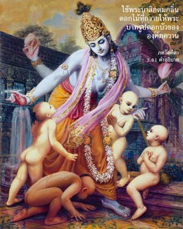
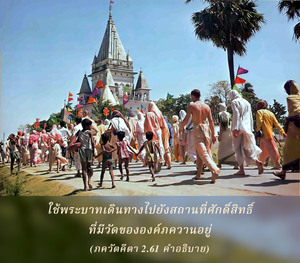

บุคคลผู้ที่สามารถปรามประสาทสัมผัสของตนเอง รักษาให้อยู่ภายใต้การควบคุมได้อย่างสมบูรณ์ และตั้งมั่นจิตสำนึกอยู่ที่ข้า ได้ชื่อว่าเป็นผู้ที่มีปัญญามั่นคง



แนวคิดสูงสุดแห่งความสมบูรณ์ของโยคะ คือ กฺฤษฺณจิตสำนึก ซึ่งได้อธิบายไว้อย่างชัดเจนในโศลกนี้ นอกจากว่าเราจะมีกฺฤษฺณจิตสำนึกมิฉะนั้นจะเป็นไปไม่ได้เลยที่จะควบคุมประสาทสัมผัสไว้ได้ ดังที่กล่าวไว้ข้างต้นว่าดุรวาสา มุนิ ผู้ยิ่งใหญ่มีเรื่องบาดหมางกับ มหาราช อมฺพรีษ ดุรวาสา มุนิ เกิดโมโหโดยไม่ใช่เหตุด้วยความทะนงตน และจึงไม่สามารถควบคุมประสาทสัมผัสของตนเองได้ อีกด้านหนึ่ง กฺษตฺริย แม้จะไม่ใช่โยคีหรือเป็นผู้มีฤทธิ์ เช่น มุนิ แต่ทรงเป็นสาวกขององค์ภควานฺ ทรงอดทนและนิ่งเฉยต่อความไม่ยุติธรรมของ มุนิ จนได้รับชัยชนะ เป็นเพราะ กฺษตฺริย ทรงสามารถควบคุมประสาทสัมผัสของพระองค์ไว้ได้ ได้กล่าวถึงคุณสมบัติที่ดีใน ศฺรีมทฺ-ภาควตมฺ (9.4.18-20) ดังต่อไปนี้
ส ไว มนห์ กฺฤษฺณ-ปทารวินฺทโยรฺ
วจำสิ ไวกุณฺฐ-คุณานุวรฺณเน
กเรา หเรรฺ มนฺทิร-มารฺชนาทิษุ
ศฺรุตึ จการาจฺยุต-สตฺ-กโถทเย
มุกุนฺท-ลิงฺคาลย-ทรฺศเน ทฺฤเศา
ตทฺ-ภฺฤตฺย-คาตฺร-สฺปรฺเศ ’งฺค-สงฺคมมฺ
ฆฺราณํ จ ตตฺ-ปาท-สโรช-เสารเภ
ศฺรีมตฺ-ตุลสฺยา รสนำ ตทฺ-อรฺปิเต
ปาเทา หเรห์ เกฺษตฺร-ปทานุสรฺปเณ
ศิโร หฺฤษีเกศ-ปทาภิวนฺทเน
กามํ จ ทาเสฺย น ตุ กาม-กามฺยยา
ยโถตฺตม-โศฺลก-ชนาศฺรยา รติห์
“กฺษตฺริย อมฺพรีษ ทรงตั้งมั่นจิตใจของพระองค์อยู่ที่พระบาทรูปดอกบัวขององค์ศฺรีกฺฤษฺณ ทรงใช้พระราชดำรัสอธิบายถึงอาณาจักรขององค์ภควานฺ ทรงใช้พระหัตถ์ทำความสะอาดวัดขององค์ภควานฺ ทรงใช้พระกรรณสดับฟังลีลาขององค์ภควานฺ ทรงใช้พระเนตรดูรูปลักษณ์ขององค์ภควานฺ ทรงใช้พระวรกายสัมผัสร่างของสาวก ทรงใช้พระนาสิกดมกลิ่นดอกไม้ที่ถวายให้พระบาทรูปดอกบัวขององค์ภควานฺ ทรงใช้พระชิวหาลิ้มรสใบ ตุลสี ที่ถวายให้องค์ภควานฺ ทรงใช้พระบาทเดินทางไปยังสถานที่ศักดิ์สิทธิ์ที่มีวัดขององค์ภควานฺ ทรงใช้พระเศียรถวายความเคารพแด่องค์ภควานฺ และทรงใช้พระราชประสงค์เพื่อให้พระราชประสงค์ขององค์ภควานฺสมปรารถนา และคุณสมบัติทั้งหมดนี้ทรงทำให้ กฺษตฺริย อมฺพรีษ เหมาะสมที่จะเป็นสาวก มตฺ-ปร ขององค์ภควานฺ”
คำว่า มตฺ-ปร มีความสำคัญมากเกี่ยวกับเรื่องนี้ เราจะเป็น มตฺ-ปร ได้อย่างไรนั้นได้อธิบายไว้ในชีวิตของ มหาราช อมฺพรีษ ศฺรีล วิทฺยาภูษณ นักวิชาการและอาชรยะผู้ยิ่งใหญ่ในสายของ มตฺ-ปร กล่าวว่า มทฺ-ภกฺติ-ปฺรภาเวน สเรฺวนฺทฺริย-วิชย-ปูรฺวิกา สฺวาตฺม-ทฺฤษฺฏิห์ สุ-ลเภติ ภาวห์ “ประสาทสัมผัสสามารถควบคุมได้อย่างสมบูรณ์ด้วยพลังแห่งการอุทิศตนเสียสละรับใช้องค์กฺฤษฺณเท่านั้น” บางครั้งได้ให้ไฟไว้เป็นตัวอย่างเช่นกันว่า “เสมือนดั่งเปลวไฟเผาไหม้ทุกสิ่งทุกอย่างภายในห้อง พระวิษฺณุผู้ทรงสถิตในหัวใจของโยคีจะทรงเผาผลาญทุกสิ่งทุกอย่างที่ไม่บริสุทธิ์ทั้งหมด” โยค-สูตฺร ได้อธิบายการทำสมาธิที่พระวิษฺณุ เช่นกันว่ามิใช่เป็นการทำสมาธิอยู่กับสิ่งที่ว่างเปล่า ผู้ที่สมมติว่าเป็นโยคีทำสมาธิอยู่กับบางสิ่งที่ไม่ใช่พระวิษฺณุจะเสียเวลาของตนไปโดยเปล่าประโยชน์ในการค้นหาสิ่งที่เป็นภาพหลอน เราต้องมีกฺฤษฺณจิตสำนึกด้วยการอุทิศตนให้แด่บุคลิกภาพสูงสุดแห่งพระเจ้า นี่คือจุดมุ่งหมายของโยคะที่แท้จริง